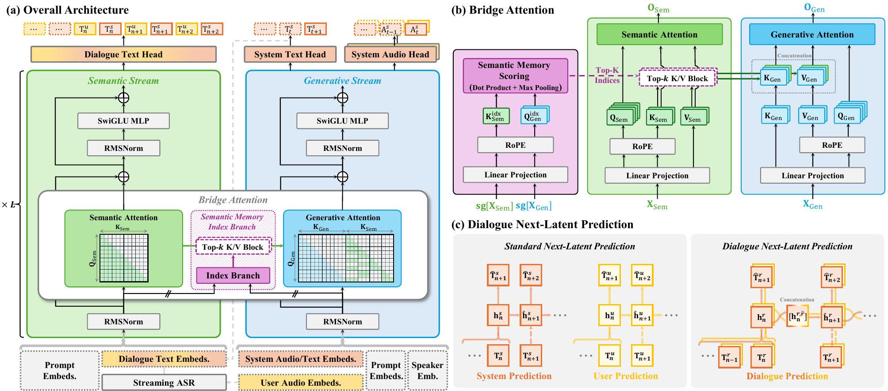

Remember the dialogue
A role-separated semantic stream maintains user and system text as persistent memory. It updates as new text becomes available.
ICLR 2027 Submission
Bridge-Duplex connects persistent semantic memory with continuous speech generation for context-consistent full-duplex dialogue.
A role-separated semantic stream maintains user and system text as persistent memory. It updates as new text becomes available.
Bridge attention gives the generative stream access to semantic history. Selective attention retrieves query-relevant memory blocks as context grows.
Dialogue NextLat predicts role-specific semantic transitions from paired user–system states during training. Its predictor is removed at inference.

This comparison will include MTR-DB and Behavior-SD target responses.
Listen to the available comparisons using the categories above.
Selected audio examples illustrate each comparison.
Two instances of the same model interact from a shared narrative with role-specific instructions. Listen to the full conversation and follow the System1 / System2 transcript.
Models receive the same reference dialogue and generate the target system response. Explore the shared User / System context once, then compare each response separately.